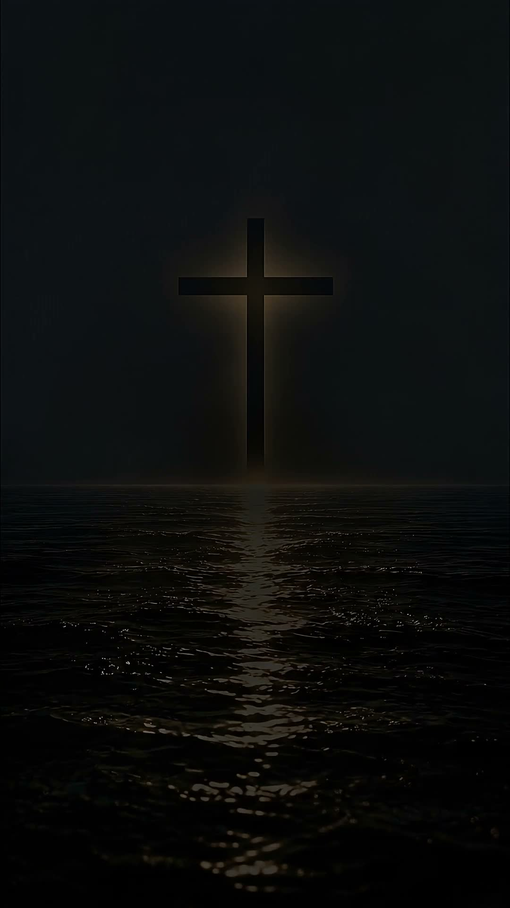

Luz que Guia
Em noites escuras de aflição, a Escritura ilumina cada passo com sabedoria, conselho e clareza divina.
Quando tudo parece estar em trevas, a fé revela a luz.
“Eu sou o caminho, e a verdade, e a vida.” — João 14:6
Há caminhos em que não conseguimos enxergar a direção.
Uma pequena luz é suficiente para romper a escuridão.
“Porque andamos por fé, e não por vista.” — 2 Coríntios 5:7
“Porque todo aquele que invocar o nome do Senhor será salvo.” — Romanos 10:13
“Eu sou o caminho, e a verdade, e a vida.” — João 14:6

“Lâmpada para os meus pés é tua palavra e luz para o meu caminho.” — Salmos 119:105
Em noites escuras de aflição, a Escritura ilumina cada passo com sabedoria, conselho e clareza divina.
Conhecereis a verdade, e a verdade vos libertará de todo medo, culpa e desesperança terrenas.
O céu e a terra passarão, mas as palavras de Cristo jamais passarão. Seu amor é inabalável.
Há momentos em que precisamos silenciar o mundo para ouvir aquilo que realmente importa.
Respire • Acalme a mente • Sinta a presença“A fé é a certeza daquilo que esperamos e a prova das coisas que não vemos.” — Hebreus 11:1